Stray
Stray , anteriormente conhecido como HK_Project , é um jogo de aventura em terceira pessoa desenvolvido pela BlueTwelve Studio e publicado pela Annapurna Interactive , feito usando o Unreal Engine 4. Este jogo foi lançado para Microsoft Windows, PlayStation 4 e PlayStation 5, em 19 de julho. , 2022.